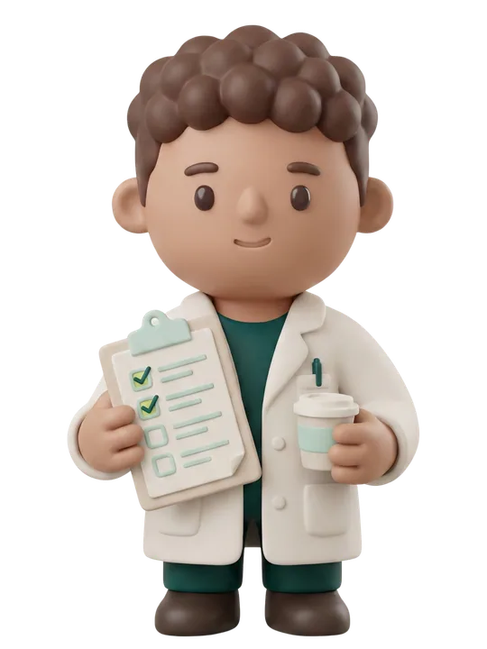

Martes, 21 de julio · 10:47
Preparación de pruebas · Miércoles 22
Teo confirma que cada paciente llega preparado. Una preparación fallida es una máquina parada.
22Pruebas mañana
18Preparaciones confirmadasConfirmadas y comprendidas
3Pendientes de respuestaTeo insiste hoy
1Requiere llamadaAviso al técnico
Pruebas de mañana · Miércoles 22 de julio
18 de 22 listas
| Hora | Prueba | Paciente | Preparación | Estado | Acción |
|---|---|---|---|---|---|
| 08:15 | RM con contraste | Carmen Vidal···4821L | Ayuno de 6 h y cuestionario de seguridad | Confirmada y comprendida | Ver conversación |
| 08:45 | TAC abdominal con ayunas | José Andreu···0374F | Ayuno de 6 h | Confirmada y comprendida | Ver conversación |
| 09:30 | RM con contraste | Ángel Robles···6519T | Cuestionario de seguridad RM | Requiere llamada Respondió sí a "llevo marcapasos" en el cuestionario. Aviso inmediato enviado al técnico a las 10:12. | Llamar ahora |
|
Teo NO valora si puede hacerse la prueba: detecta la respuesta y avisa al técnico. La decisión es clínica. |
|||||
| 10:00 | Mamografía | Pilar Cano···2963D | Sin preparación | Confirmada y comprendida | Ver conversación |
| 10:30 | TAC abdominal con ayunas | Rosa Ferrer···8140Q | Ayuno de 6 h | Sin respuesta Teo la llamará hoy a las 17:00. | Ver conversación |
| 11:15 | RX tórax | Marcos Gil···5507B | Sin preparación | Confirmada y comprendida | Ver conversación |
| 12:00 | RM con contraste | Elena Sanz···7286M | Ayuno de 6 h y cuestionario de seguridad | Pendiente de respuesta Recordatorio reenviado por Teo a las 09:40. | Ver conversación |
| 12:45 | Mamografía | Teresa Ibáñez···1938H | Sin preparación | Sin respuesta Teo la llamará hoy a las 17:00. | Ver conversación |
Mostrando las 8 primeras pruebas de la mañana.
Ver las 22 pruebas del miércoles
Cómo trabaja Teo
Activo
- Envía las instrucciones de preparación por WhatsApp en el momento de citar.
- Pide confirmación de que se han entendido 48 horas antes de la prueba.
- Si no hay respuesta, reenvía el recordatorio.
- La víspera, llama por teléfono a quien sigue sin responder.
- Cualquier duda médica la pasa al técnico. Teo nunca decide.
Garantía: Teo se presenta siempre como inteligencia artificial y no da consejo clínico.


Vega cita sobre los huecos reales de tus máquinas
Cuando una preparación falla o alguien cancela, Vega ofrece ese hueco a la lista de espera.
4
Huecos de máquina recuperados esta semana